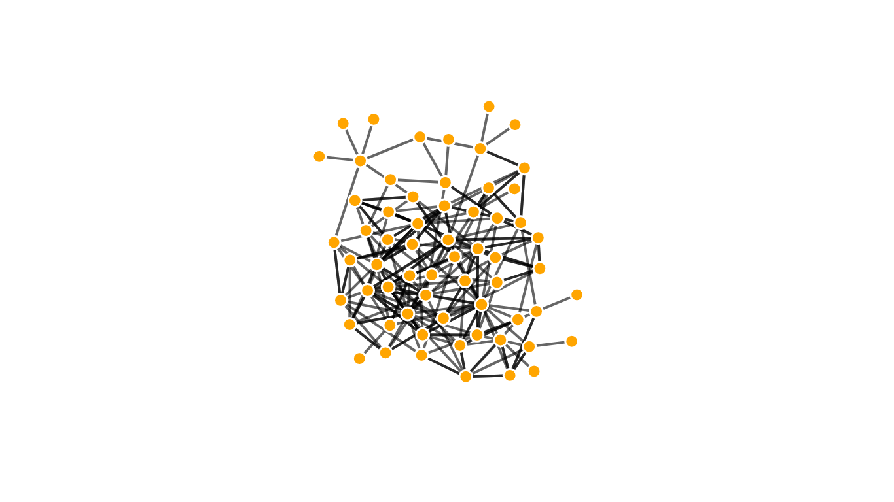
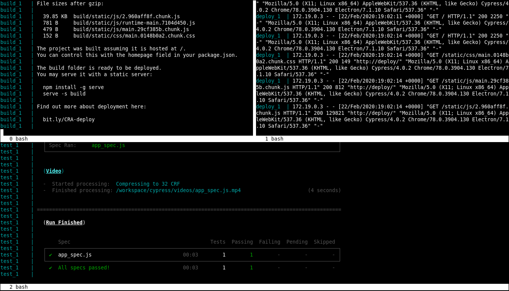

Similarity graph for Foursquare places. Crawls through venue connections, recursively drawing links between them and their peers.

After cloning the sources you can choose to run the pipeline in Docker containers or locally, with NPM. Information on how to install Docker and docker-compose can be found in their official page. The same page is available for Node and NPM.
git clone https://github.com/marcbperez/react-similarity-network
cd react-similarity-networkIf you decide to use NPM without Docker, make sure to install the project dependencies. Skip this otherwise, since the containers will do this automatically.
npm installIf you are using Docker, you start the build, deployment and end-to-end test services at the same time or independently.
# Start the build, deployment and end-to-end test services
sudo docker-compose upThe build container starts the development server on http://localhost:3000 and
unit-tests, documents and builds the application every time the src or
public folders change. The deploy container starts a dummy deployment
environment on http://localhost:8000, exposing the files from the build
folder. The test container starts an end-to-end Cypress service that checks
CYPRESS_BASEURL, which points to the deploy service by default.
# Start the development server and the build pipeline.
sudo docker-compose up build
# Start the dummy deployment environment.
sudo docker-compose up deploy
# End-to-end test the dummy deployment environment.
sudo docker-compose up testWith NPM, the commands invoked by the Docker containers include npm install
and the ones defined in package.json. These include commands to manage the
pipeline and the ones initially provided by create-react-app.
# Starts a development server in port 3000.
npm start
# Runs unit and integration tests.
npm test
# Generates the production build in the `build` folder.
npm run build
# Generates a coverage report in the `coverage` folder.
npm run cover
# Documents the project inside the `docs` folder.
npm run document
# Covers, documents and builds the project.
npm run pipeline
# Watches for changes in `src` and `public` and runs the pipeline.
npm run watchIn Docker, unit tests with coverage report are executed every time the code
changes. As for the end-to-end tests, the Cypress service will check
CYPRESS_BASEURL every time build changes. If tests fail, a screenshot will
be exported to cypress/screenshots. If they pass, the video will be available
in cypress/videos.
With NPM, npm test will unit-test the codebase, and npm run cover will test
and output a coverage report into the coverage folder, as described above.
End-to-end testing without Docker is not yet implemented and will be added in
future a release.

The react app can be deployed to a static web server by publishing the build
folder. Also, the deployment container can be pushed into a registry defined in
docker-compose.yml after the build folder has been generated.
sudo docker-compose push deployTo run end-to-end tests against your new deployed environment, run the Cypress
service with the updated CYPRESS_BASEURL.
The issue tracker intends to manage and compile bugs, enhancements, proposals and tasks. Reading through its material or reporting to its contributors via the platform is strongly recommended.
This project adheres to Semantic Versioning and to certain syntax conventions defined in .editorconfig. To get a list of changes refer to the CHANGELOG. Only branches prefixed by feature-, hotfix-, or release- will be considered:
git checkout -b feature-my-feature developgit commit -am 'Added my new feature.'git push origin feature-my-featureThis project is created by marcbperez and maintained by its author and contributors.
This project is licensed under the Apache License Version 2.0.
Generated using TypeDoc